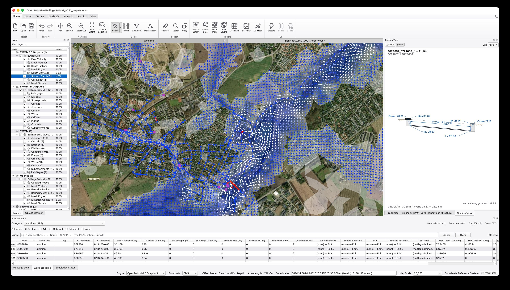

The water systems that protect our communities are increasingly managed through models of rainfall, runoff, pipes, streams, and aquifers. HydroCouple provides the open interface definitions and data standards that let these models connect into a single, composable digital representation of the urban water cycle, with Open-Source SWMM 6.0 (SWMM2D), a HydroCouple initiative, as its flagship engine. Because the whole stack speaks standard interfaces, it is native ground for artificial intelligence in modeling, operations, and control.

A storm moves through a city as one connected event: rain becomes runoff, runoff enters sewers, sewers surcharge into streets, streams exchange with groundwater. Yet the models that simulate each of these processes have historically been silos: separate codes, separate file formats, separate assumptions, glued together with one-off scripts that break and can't be reproduced. The digital water transformation demands a public, standards-based integration layer that any model can plug into.
Process models compiled as components with standard interfaces, organized into coupled compositions that represent whole systems.
Interface definitions built around standard geospatial data (time series, meshes, networks, rasters) so exchanged quantities carry their geometry, units, and metadata.
Interfaces designed for HPC and cloud execution: component cloning, parallel runs, and customizable data-exchange workflows for calibration and uncertainty analysis.
Every component in the ecosystem (hydrologic, hydraulic, water quality, groundwater) implements the same HydroCouple interface definitions. That common contract is what turns a collection of independent codes into an integrated digital representation of public water infrastructure. Open-Source SWMM sits at the center; the interfaces make the coupling possible.
For five decades, EPA's Storm Water Management Model has been the public backbone of urban stormwater engineering. Open-Source SWMM 6.0 (SWMM2D), a HydroCouple initiative, carries that legacy forward as a community-driven, next-generation engine: a modern C++20 rewrite with a reentrant core, data-oriented design, GPU-capable 2D solvers, Python bindings, and an agent-ready tooling layer, released in the open and validated against published benchmarks.
Next-generation computational core: hydrology, hydraulics, and water quality with a reentrant API, structure-of-arrays performance, plugin I/O, and 1D/2D coupling.
A modern interface for building, running, and interrogating models, bringing the next-generation engine to practicing engineers.
A Model Context Protocol server exposing the engine to AI agents and LLM-driven workflows to build, edit, run, and analyze models programmatically.
HydroCouple and Open-Source SWMM 6.0 (SWMM2D) are developed in the open. Use the models, report issues, contribute components, or bring your utility's use case to the table.